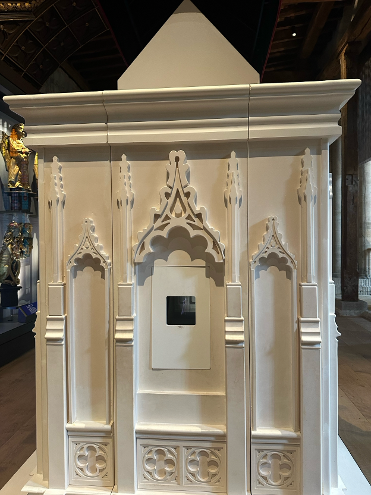
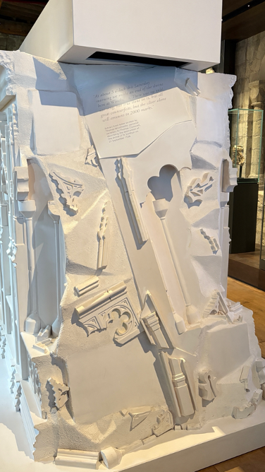
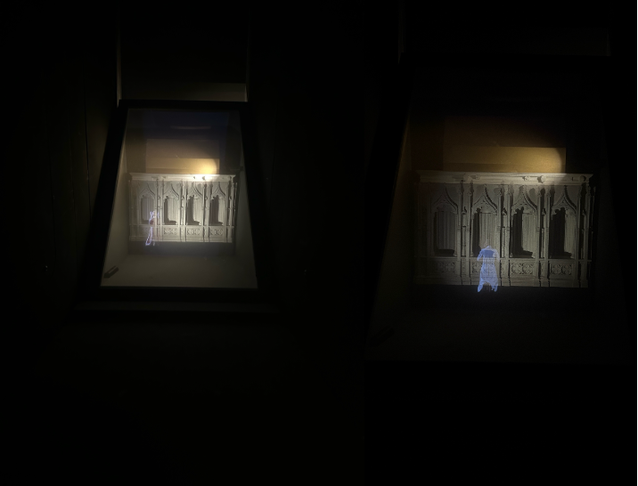

During a visit to Winchester Cathedral, I chanced upon an impressive immersive installation that reconstructs the medieval shrine of St Swithun. According to the exhibition notes beside it, the shrine was recreated through 3D modeling by scholars from the Archaeological Institute of the University of Bamberg in Germany, at three-quarters the scale of the original. The original shrine, built in 1476, not only has its physical form restored by this installation but also evokes the historical memory of its destruction in the 1538 iconoclasm during Henry VIII’s reign.

The shrine model features exquisite craftsmanship and intricate details, resembling the ruins of a miniature temple. At the front of the installation, a display shows the shrine in its original completeness, while the rear exhibits fragmented remains of the destroyed shrine scattered across the statues, creating a stark visual contrast. This before-and-after arrangement allows visitors to witness both its former grandeur and the traces of its destruction.

What intrigued me most, however, was a tiny peephole at the front of the installation, there is an opening like a window. When I leaned in to look through it, I discovered a miniature scene where medieval pilgrims were praying. As I immersed myself in the view, a translucent glowing figure suddenly appeared like a spectral presence, that has moving and gesturing within the shrine with striking realism.

Out of curiosity, I carefully observed the installation’s structure. It turned out that above the angled glass, there was a hidden screen playing a pre-recorded video of an actor. The 45-degree tilted reflective glass refracted the screen’s image into my line of sight, creating a three-dimensional holographic image that seemed to float in space. This seemingly ghostly figure appeared to truly exist within the shrine, like a spirit reenacting past prayer scenes.
This moment sparked both technical curiosity and emotional resonance in me. The principle here is actually the classic “Pepper’s Ghost” technique. Although it has been invented for a long time, its effect remains astonishing when combined with historical narrative and spatial reconstruction. The installation not only restores the shrine’s appearance but, more importantly, allows visitors to experience the spiritual atmosphere it once held.
Reflection
This experience has inspired new ideas for my Winchester Cathedral AR project. I realize that even a static historical object can be transformed into a narrative space full of vitality and a sense of time through visual illusions and perspective guidance. When I leaned close to that small window and saw the ghostly figure appear, it felt less like visiting history and more like witnessing history.
This also reminds me that perspective and the viewer’s position are crucial in narrative design. It doesn’t require complex interactive technology—with clever design in the way of viewing, it’s possible to create unforgettable emotional experiences.
I’m now considering incorporating a similar time window mechanism into my AR project, for example, allowing users to see through fragments of the past from a specific position in the real scene, like a window through which time flows. This could create a mysterious and ritualistic effect.